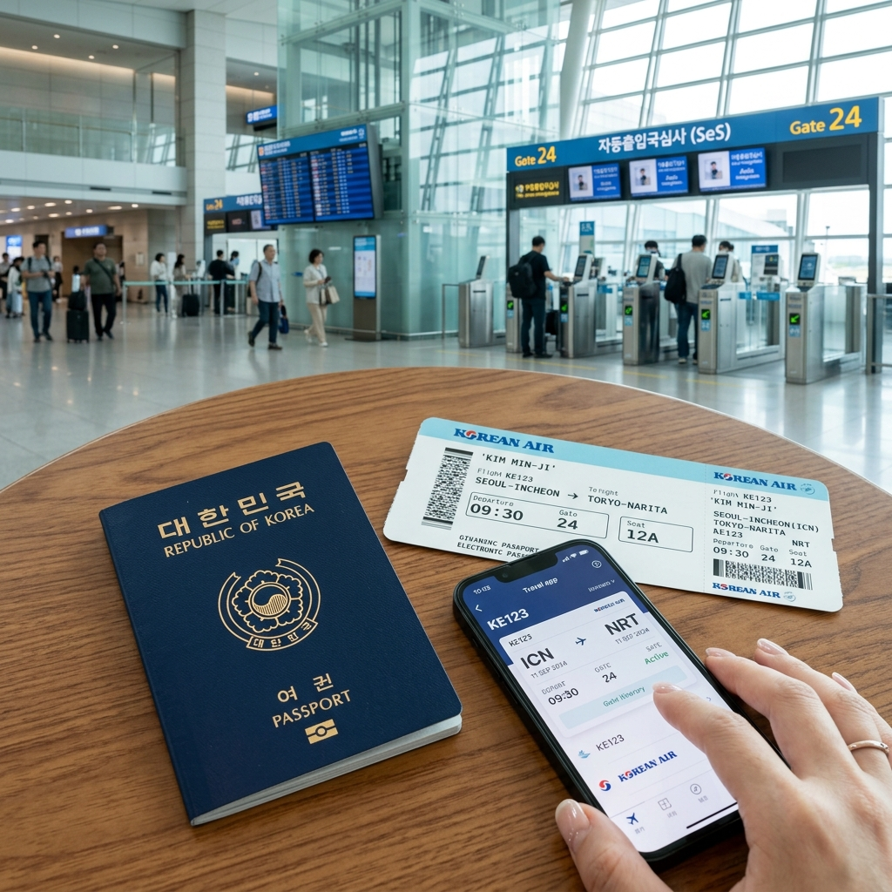
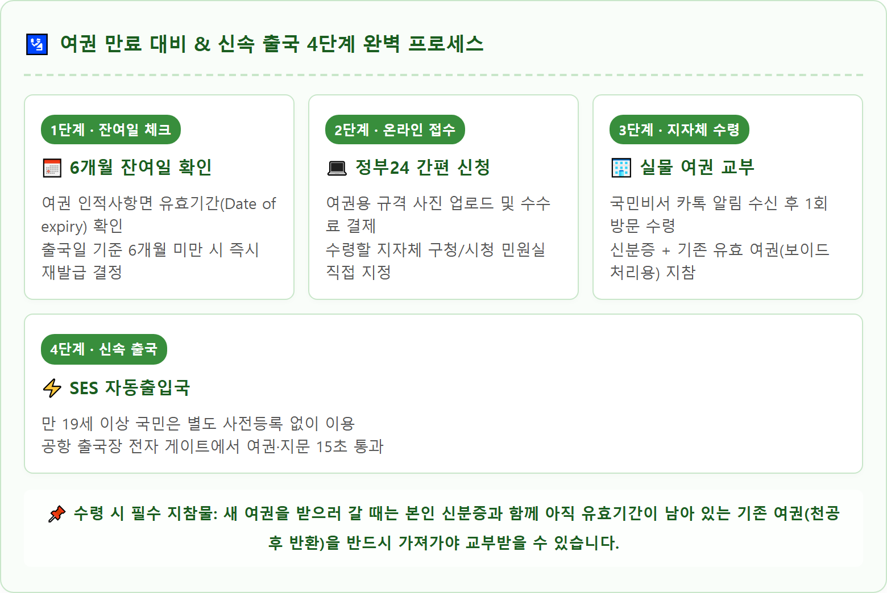
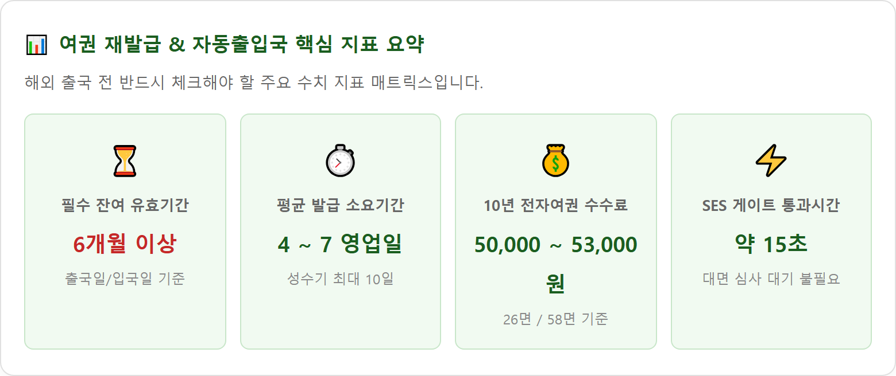

여권 유효기간 얼마 남았을 때 재발급해야 하나 — 해외여행 6개월 룰과 자동출입국심사(SES) 등록 방법
해외여행을 계획 중이라면 여권 유효기간이 출국일 또는 입국일 기준 최소 6개월 이상 남아 있는지 반드시 확인해야 합니다.
미국, 유럽 솅겐조약국, 베트남, 태국, 대만 등 전 세계 대다수 국가는 '여권 잔여 유효기간 6개월 이상'을 입국 필수 조건으로 규정하고 있어, 이를 위반할 경우 공항 체크인 데스크에서 탑승이 거부되거나 현지에서 강제 입국 불허를 당할 수 있습니다. 정부24 온라인 여권 재발급 신청 방법과 수수료, 발급 소요기간, 그리고 공항에서 대기 없이 15초 만에 통과하는 자동출입국심사(SES) 사전등록 대상과 이용법을 총정리해 드립니다.

차세대 대한민국 전자여권과 공항 자동출입국심사 스마트 게이트 / AI 제작 이미지
01 | 해외여행 필수 상식: '여권 유효기간 6개월 룰'의 실체
많은 여행객이 항공권을 예매할 때 출발일 기준 여권이 유효하기만 하면 출국할 수 있다고 오해하곤 합니다.
그러나 국제 항공 규정과 각국 출입국관리법에 따르면 외국인 여행자가 체류 중 여권 만료로 불법 체류자가 되거나 긴급 상황 시 신원 증명이 곤란해지는 사태를 방지하기 위해 입국일 또는 출국일 기준 6개월 이상의 유효기간을 요구하는 이른바 '6개월 룰(Six-Month Rule)'을 엄격히 적용합니다.
만약 여권 유효기간이 5개월 25일 남아 있다면, 단 하루 차이라 하더라도 항공사 체크인 카운터에서 발권 시스템에 제재가 걸려 탑승권(Boarding Pass) 자체를 발급받지 못합니다.
만약 직원의 실수로 출국하더라도 상대국 입국 심사대에서 입국이 거절되어 다음 귀국편 비행기로 즉시 송환되는 낭패를 겪게 됩니다.
02 | 주요 여행 국가별 여권 잔여 유효기간 규정 전수 비교
여행하고자 하는 목적지에 따라 요구하는 잔여 유효기간의 기준점과 일수가 상이하므로 사전 확인이 필수적입니다.
| 국가 및 지역 |
요구 잔여 유효기간 기준 |
해당 주요 국가 |
입국일 기준 6개월 이상
(가장 엄격) |
입국 심사를 받는 당일 기준으로 여권 만료일까지 6개월 이상 남아 있어야 함 |
베트남, 태국, 필리핀, 대만, 싱가포르, 말레이시아, 인도네시아, 마카오 |
| 출국일(귀국일) 기준 6개월 이상 |
현지 체류를 마치고 귀국하는 날짜 기준으로 6개월 이상 남아 있어야 함 |
미국 (ESTA 무비자 포함), 캐나다 (eTA) |
| 솅겐 지역 출국일 기준 3개월 이상 |
유럽 솅겐협약국을 최종 출국하는 날 기준 3개월 이상 및 10년 이내 발급본 |
프랑스, 독일, 이탈리아, 스페인, 스위스, 오스트리아 등 유럽 29개국 |
체류 예정 기간 이상
(비교적 유연) |
단기 관광 체류 기간 동안만 여권이 유효하면 입국 허용 |
일본, 홍콩, 영국, 호주 (ETA) |
💡 안전한 해외여행의 원칙
일본처럼 체류 기간만 유효하면 입국을 허용하는 국가라 하더라도, 귀국 항공편 결항이나 천재지변 등으로 일정이 연장될 가능성이 있습니다. 따라서 국가를 불문하고 여권 만료일이 7~8개월 안으로 들어왔다면 미리 재발급을 신청하는 것이 가장 안전합니다.
03 | 정부24 온라인 여권 재발급 신청 방법과 수수료
과거에는 구청이나 시청 여권과를 직접 두 번(신청 시 1번, 수령 시 1번) 방문해야 했으나, 현재는 정부24(gov.kr) 웹사이트 및 모바일 앱을 통해 온라인으로 간편 신청이 가능합니다.
온라인으로 신청하면 여권이 제작 완료된 후 수령할 때만 신분증을 지참하고 지정한 지자체 민원실에 1회 방문하면 됩니다.
🖥️ 정부24 온라인 여권 재발급 5단계 절차
1. 포털 로그인: 정부24 홈페이지 또는 앱 접속 후 간편인증 또는 공동인증서 로그인
2. 서비스 검색: 검색창에 [온라인 여권 재발급 신청] 입력 및 신청 버튼 클릭
3. 여권용 사진 파일 등록: 6개월 이내 촬영한 규격 사진(가로 3.5cm × 세로 4.5cm, 흰색 배경, 해상도 413×531 픽셀 권장) 업로드
4. 수령 기관 및 여권 종류 선택: 차세대 전자여권(파란색) 면수(58면 또는 26면) 및 거주지 인근 구청·시청 수령처 지정
5. 수수료 결제 및 접수: 온라인 결제 완료 (심사 통과 후 카카오톡 '국민비서'로 진행 상황 알림 발송)
| 여권 종류 및 유효기간 |
면수 |
발급 수수료 |
온라인 결제 부가 수수료 |
| 차세대 복수여권 (10년) |
58면 (복수) |
53,000원 |
결제 수단별 약 2,246원 (카드/계좌이체) |
| 차세대 복수여권 (10년) |
26면 (슬림) |
50,000원 |
결제 수단별 약 2,120원 |
| 종전 일반여권 (녹색 표지, 재고 소진 시까지) |
유효기간 4년 11개월 |
15,000원 (알뜰형) |
수수료 저렴하여 단기 여행자 인기 |

🛂 여권 만료 대비 & 신속 출국 4단계 완벽 프로세스 / 인포그래픽 카드
04 | 여권 재발급 제작 소요기간과 출국 전 골든타임
여권 발급 소요기간은 신청 시기와 조폐공사의 여권 제작 물량에 따라 달라집니다.
• 비수기 (3~5월, 9~10월): 신청일 기준 약 4영업일 ~ 6영업일이면 교부됩니다.
• 성수기 (여름휴가철 6~8월, 연말연시 11~1월): 방학 및 연말 여행 수요가 집중되어 7영업일 ~ 10영업일 이상 소요될 수 있습니다.
따라서 해외여행을 계획 중이라면 항공권 발권 직후, 최소 출국 3~4주 전에 여권 재발급을 완료해 두어야 사진 규격 반려나 시스템 지연으로 인한 출국 차질을 예방할 수 있습니다.

📊 여권 재발급 & 자동출입국 핵심 지표 요약 / 데이터 요약 카드
05 | 출국 당일 만료 발견 시: 공항 긴급여권 발급 요건과 한계
공항에 도착해서야 여권 유효기간 만료나 6개월 미달 사실을 알게 되었다면, 최후의 수단으로 인천공항 여권민원센터에서 긴급여권(비전자 단수여권)을 신청할 수 있습니다.
• 발급 위치: 인천공항 제1여객터미널 3층 G체크인카운터 부근 및 제2여객터미널 2층 정부종합행정센터
• 운영 시간: 09:00 ~ 18:00 (연중무휴)
• 신청 요건: 당일 출국 항공권 소지자 중 긴급한 사유(가족 사망, 사업상 긴급 출장 등 증빙) 또는 단순 여행자의 경우 일정 기준 부합 시
• 발급 수수료: 53,000원 (사진 2매 및 신분증 필요)
⚠️ 긴급여권 이용 시 치명적인 주의사항
긴급여권은 1회용 단수여권이자 칩이 내장되지 않은 '비전자여권'입니다. 따라서 전자여권 소지가 필수인 미국(ESTA), 캐나다(eTA)는 입국이 불가능하며, 베트남 등 일부 국가는 긴급 단수여권 소지자의 무비자 입국을 거부합니다. 사전에 목적지 국가가 긴급여권을 인정하는지 외교부 영사콜센터(02-3210-0404)를 통해 반드시 확인해야 합니다.
06 | 자동출입국심사(SES) 스마트 엔트리 서비스 등록 및 이용법
법무부 출입국·외국인정책본부의 **자동출입국심사(SES - Smart Entry Service)**는 대면 심사관의 대기 줄 없이 전용 전자 게이트를 통해 신속하게 통과하는 시스템입니다.
• 만 19세 이상 대한민국 국민: 경찰청에 등록된 지문 및 주민등록 사진 정보를 자동으로 연계하므로, **사전 등록 절차 없이 누구나 즉시 이용**할 수 있습니다. 여권을 게이트 스캐너에 올리고 안면 인식 및 지문 스캔만 마치면 약 15초 만에 심사가 완료됩니다.
• 만 7세 이상 ~ 만 18세 이하 미성년자: 주민등록증이 발급되지 않은 연령대이므로 사전등록이 필수적입니다. 부모와 함께 가족관계증명서 및 여권을 지참하고 **공항 출입국 서비스센터나 지자체 등록센터**를 방문하여 지문 및 얼굴 사진을 최초 1회 등록해야 자동 게이트를 이용할 수 있습니다.
• 개명 또는 주민번호 변경자: 개명이나 주민등록번호 정정 등으로 정보가 변경된 국민은 출국 전 등록센터를 방문해 정보를 갱신해야 게이트 에러를 방지할 수 있습니다.
07 | 해외여행 전 여권 분실 방지와 훼손 주의사항
여권은 단순한 신분증이 아니라 소지국의 국권을 나타내는 공식 공문서이므로 작은 훼손도 입국 거부의 원인이 됩니다.
1. 사증란 낙서 및 찢김 절대 금지: 아이들의 낙서나 기념 도장(출입국 공식 도장 외에 관광지 기념 스탬프를 사증란에 날인하는 행위), 페이지가 살짝 찢어진 경우 유효기간과 무관하게 훼손 여권으로 분류되어 탑승이 거부됩니다.
2. 여권 분실 대비 사본 보관: 해외에서 여권을 분실했을 때 신속하게 여행증명서를 발급받기 위해, 여권 인적사항면을 스마트폰으로 선명하게 촬영해 클라우드나 메일에 저장해 두고, 여권용 사진 여분 2매를 트렁크에 보관해 두는 습관이 필요합니다.
08 | 해외여행 출발 전 최종 체크리스트
완벽한 해외 출국을 위해 짐을 싸기 전 최종 확인해야 할 5가지 체크포인트입니다.
✈️ 완벽한 출국을 위한 5대 여권 점검 리스트
[ ] 여권 만료일이 여행 귀국일 기준으로 최소 6개월 이상 남아 있는가?
[ ] 여권 사증란에 찢어짐, 물에 젖은 흔적, 임의의 관광 기념 스탬프가 없는가?
[ ] 여권 영문 성명(Family Name, Given Name) 철자가 항공권 발권 내역과 100% 일치하는가?
[ ] 만 7세~18세 미성년 자녀의 자동출입국심사 사전등록이 완료되었는가?
[ ] 만약을 대비한 여권 사본 및 신분증 사본을 스마트폰 사진으로 보관하였는가?
#여권유효기간
#여권6개월룰
#여권재발급
#정부24여권신청
#여권발급기간
#차세대전자여권
#자동출입국심사
#SES사전등록
#긴급여권발급
#해외여행준비물